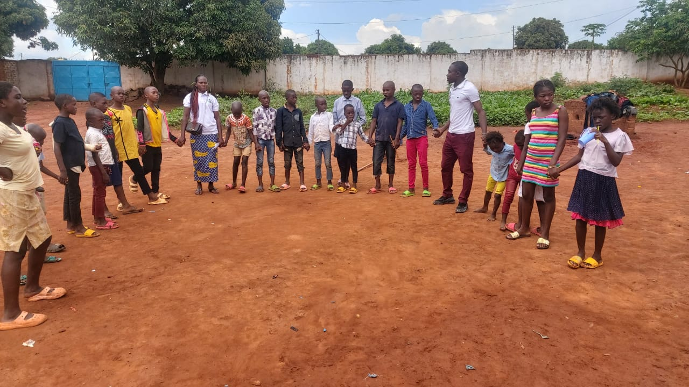
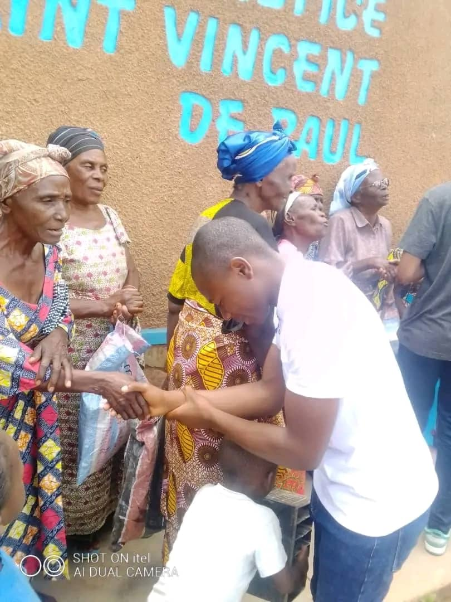
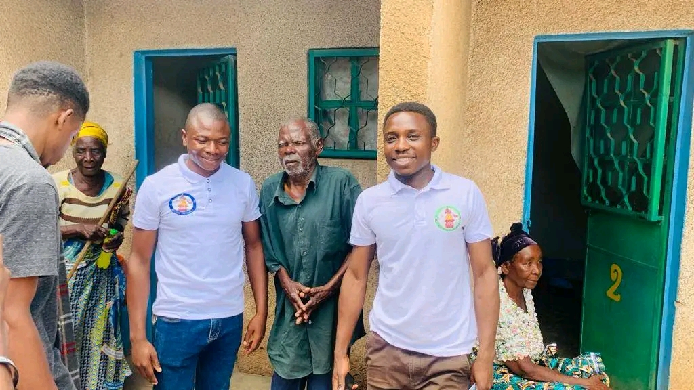
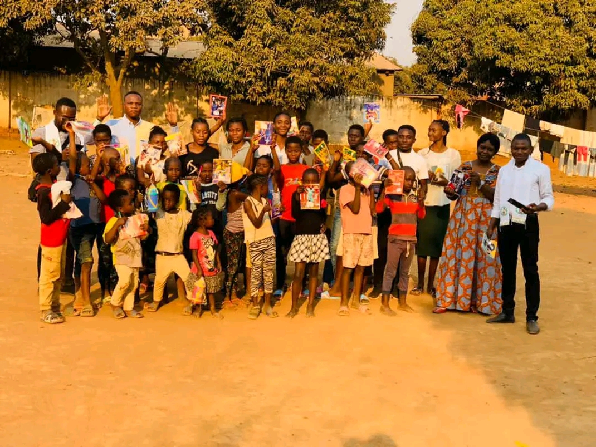

Les enfants orphelins et ceux vivant dans des situations familiales instables représentent une priorité absolue pour la F.J.E.R.E.
Nous leur offrons un encadrement global comprenant l’éducation, le soutien psychologique, la protection sociale et l’accès à des activités éducatives.
Notre objectif est de leur garantir une stabilité émotionnelle et un avenir fondé sur l’espoir et l’apprentissage.

Les femmes vulnérables bénéficient de programmes structurés visant leur autonomisation économique et sociale.
Nous mettons en place des formations professionnelles, des activités génératrices de revenus et des espaces de soutien communautaire afin de renforcer leur indépendance et leur rôle dans la société.

Les personnes vivant avec un handicap sont pleinement intégrées dans nos programmes d’inclusion sociale.
Nous favorisons leur accès à l’éducation, à la formation et à des activités adaptées, tout en sensibilisant les communautés à leur pleine participation dans la société.

Les jeunes en situation de précarité sont accompagnés à travers des programmes de formation, d’orientation professionnelle et de développement personnel.
Nous leur offrons des alternatives concrètes afin de les éloigner de la marginalisation et de les orienter vers un avenir productif.